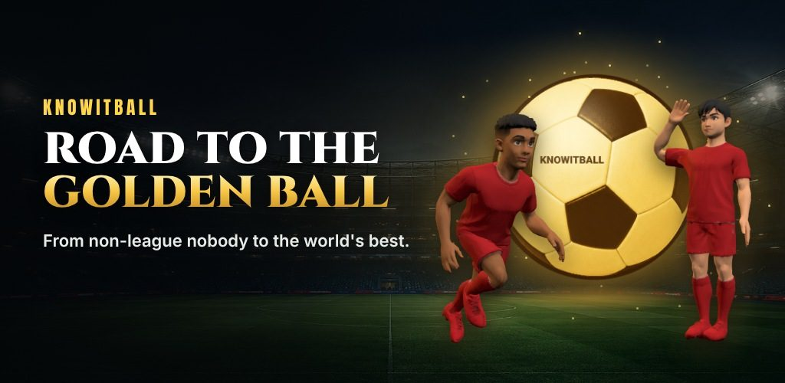
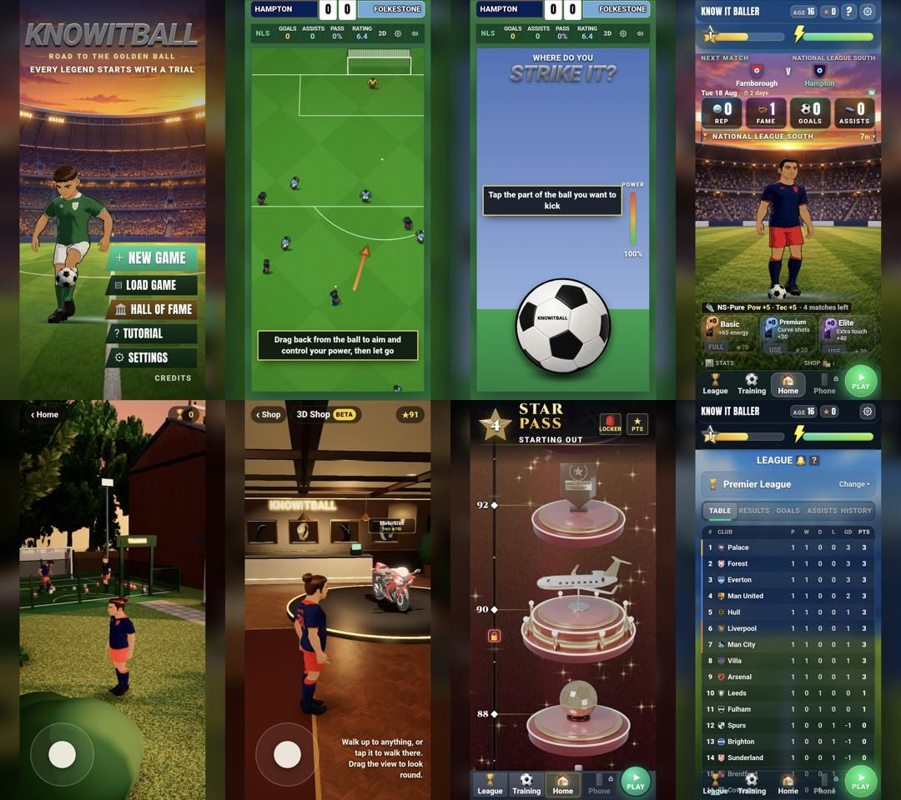
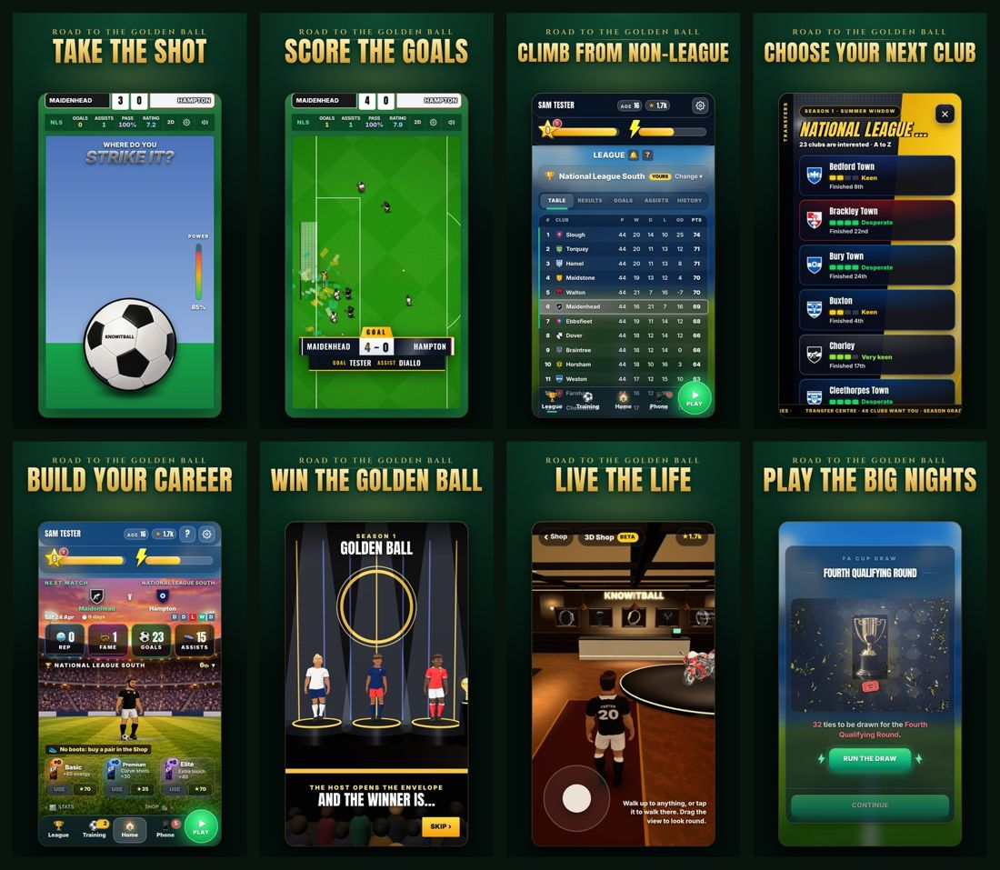

19 November 2026 · branch claude/eloquent-bohr-6veqfh · 53 commits · phone app checks: all passing · site 0.139
86languages on the Play Store page
100 / 100phone matches identical to the website
0changes to the website's game rules
14 daysclosed test before the public launch
The headline
Two phone apps: the packed app goes to Google Play now, a phone-built app (KIB Next) is ready to test
The packed app (the website inside an app) is signed and its store page is done. It still felt laggy, so a second app was built for the phone from scratch. It plays the same game with the same rules. measured
Packed app 1.0 → 1.1 (no blur) → closed test: 12 testers, 14 days → public
and, side by side
KIB Next (phone-built) → testing with the team → later: version 2.0 of the same Play app
Check these
The privacy policy's phone app sectionknowitball.co.uk/legal → “Our Phone App”.
Store listing text in 86 languagesPlay Console → Store presence → Store listings.
Icon, feature graphic, 8 screenshots, AI labelsPlay Console → Default store listing.
App 1.1: no frosted-glass blurInstall the 1.1 APK, compare scrolling with 1.0.
No Card Night event in the phone appPlay a phone-app career; the gambling invite never comes.
KIB Next: start a career, trial, signInstall KIB Next → New game.
KIB Next: a full match, strike screen, shootoutKIB Next → Play.
KIB Next: League, Phone, Shop, Star Pass, transfersKIB Next → bottom bar and Home links.
KIB Next: your 3D playerKIB Next → Home and the title screen; drag him.
KIB Next: Save video on a goal clipKIB Next → Phone → Kickabout → Goal replays, or the feed.
KIB Next: the farewell walk-out and ovationKIB Next → your last match.
Added: Google Play
A Google Play developer account
Personal account, non-trader (no in-app purchases yet; can change later). ID verified. seen
A signed app ready to upload
app-release.aab (about 158 MB) for Play, plus an APK to install by hand. Signed with Knowitball's own upload key; Google signs the copies players get. measured
Why / how
The upload key and its password live outside the code, never in git. Every new upload needs a higher version number. Steps: mobile/README.md → Release build.
The store page in 86 languages
Name, short and full description in every Play language, all inside Google's length limits. Each non-English one says the game is in English. measured
How sure
Not checked by native speakers. The big languages should be solid; Lao, Khmer, Burmese and Amharic are the least certain.
Icon, feature graphic and screenshots
The game's own icon. A feature graphic with three 3D players in kit. Mikey's 8 phone screenshots made Play-ready (1080 × 1920), plus 8 captioned ones. seen

The feature graphic: the game's own 3D players on the stadium background.

Mikey's screenshots. Play refuses anything taller than twice its width, so each sits on a 1080 × 1920 card.

The captioned set: TAKE THE SHOT, CLIMB FROM NON-LEAGUE, WIN THE GOLDEN BALL and more.
Play's forms answered
Data safety: no data collected. Ads: none. Target age 13+. No gambling in the app. AI labels on the 3 pictures with AI-made stadium art (title, home, feature graphic). seen
Privacy policy covers the phone app
New section: plays offline, no account, no analytics, no ads, the save stays on the phone. Live at knowitball.co.uk/legal. seen
Changed: the packed app
App 1.1: no frosted-glass blur
79 blurred see-through panels became plain see-through ones, in the app only (the website keeps the blur). Mikey: “not a huge change for the lag”. seen
No Card Night in the phone app
The gambling-invite event never comes in the app, so Play's age rating stays low. The app already had no casino. measured
Found: why the app lags
Hidden work makes even untouched screens stutter
Mikey's phone, lag test of 22 Oct: stutters with nobody touching the screen. measured
2D match, 40 s171
Garden, 30 s90
Phone feed, 30 s87
Stats, 30 s61
Home, 20 s37
What a stutter is, and the Home player
A stutter is a frame that took over 50 ms. Also found in the packed app: the Home player is a live 3D model redrawn 30 times a second for as long as Home is open (ToonHomePlayer.tsx). Findings: docs/phone-app/PLAN.md.
Added: KIB Next, the phone-built app
A separate app built for the phone
Its own folder (phone/). It reads the game's rules from the same files as the website and never changes them. Installs next to the current app as “KIB Next”. measured
Why this way
The rules (matches, seasons, cups, transfers) are shared, so a rules fix reaches the website, the packed app and KIB Next together. Only the screens are rebuilt for the phone. Mikey chose: the website's match file is not touched.
Matches play exactly as on the website
Full 90 minutes, every kind of chance, strike screen, curl, passing, captain orders, shootouts, internationals, the half-time can. Played both ways: 100 of 100 matches identical. measured
The check
phone/tools/match-parity.ts compares each chance's kind, result, minute, dice count and ball position, then the score and full stats. It fails on any difference.
The whole career
Trial to retirement: profile, trial stages and drills on the real pitch, offers, Home, post-match, Stats, Training, end of season, Golden Ball night and awards, transfers, youth team, loans, farewell, Hall of Fame, 3 save slots. A 20-season run matches the website's rules field for field. measured
Everything around it
Every league and cup, cup draws, the phone and feed, shop, sponsors, Star Pass, Kickabout, the Owner app (politics and votes), the boardroom, help pages. No casino, no gambling. measured
Real players, offline
The same squads, photos and badges as the packed app (an Arsenal career has Saka, Rice, Saliba, Ødegaard, Raya). About +15 MB. measured
The website's own drawings
Players, heads and badges are drawn by the website's code: 15 test pictures matched the browser apart from the font. Matches use the website's player sprites at its 20° camera tilt. measured
Goal videos, with Save video
Every goal recorded frame by frame, with the website's commentary. Save video makes an MP4 (about 2 MB for 10 s), saves it to the gallery, then offers Share. not yet seen
3D, only where Mikey asked
Your 3D player on Home and the title screen (stops moving 6 s after the last touch), 3D award headshots, and the farewell walk-out with the guard of honour and ovation. Left out: garden, 3D shop, house, 3D training. not yet seen
Buttons that react at once, and sound
A small buzz on every press; match sounds and commentary. not yet seen
Known issues
KIB Next has never run on a phone High
Every check was headless or in a browser. Crashes, frame rate, touch, sound and 3D on a real phone are untested.
Save video untested on a device High
The video maker is native Android code that could not run here. iPhone has no video maker yet.
Extra permissions in the KIB Next test build Low
It asks to read photos and to show over other apps. Remove before any release; Google checks these.
Store translations not checked by native speakers Low
Smaller languages are the least certain.
3D edges a little harder on KIB Next Low
The phone's 3D view does not smooth edges.
Next
Closed test of the packed app
Upload the AAB, add 12+ testers, 14 days, then apply for production. Waiting on: Mikey.
Playtest KIB Next on real phones
Crashes, smoothness, aiming, the 3D player, Save video. Waiting on: Mikey, Harry, Leo.
KIB Next as version 2.0 on Play
Mikey: keep testing first.
Previous versions
v0.22 · 2026-10-26 · A new career's first hour as a story, Power 40 clearly weaker with a Power curve test box, chances that follow
v0.21 · 2026-10-23 · The master plan built: one bottom bar, a Stats page with your card and four tabs, League as one page for every
v0.20 · 2026-10-21 · Game music: 11 original orchestral tracks for home, matches, full time and the Ballon d'Or night, behind a Set
v0.19 · 2026-10-20 · Mikey's new pop-ups (scoreboard goals, TV captions), the real 10-round FA Cup, team-mate goals kept on reload,
v0.18 · 2026-10-19 · The world season: every league, cup and European competition played for real, week by week, with a screen to s
v0.17 · 2026-10-18 · The new transfer window (clubs come to you, season letters S to D), the world ages (decline from 31, retire 35
v0.16 · 2026-10-13 · Gameplay review: fewer feed videos that wait for ▶, upright goal posts, achievements unlock and level you up a
v0.15 · 2026-10-13 · International football: call-ups, duty mode, watching on TV, scorers for every goal; the Ballon d'Or counts cl
v0.14 · 2026-10-09 · Real Premier League shots playable as test chances; Chances (testing): about 9 Kane-style highlights a match,
v0.13 · 2026-10-08 · Play-off, cup and European round-ups with animated brackets; the real UEFA knockout; two-legged League Cup sem
v0.12 · 2026-10-08 · The ovation's hugs, dap-ups, pat and claps made in Blender; the farewell's 3D ovation checked in a real match
v0.11 · 2026-10-08 · 3D standing ovation; centre-back Golden Boot and day-one line-ups fixed; more assists; clearances, negotiation
v0.10 · 2026-10-04 · Relationships rebuilt: bars that move slowly, one game per relationship, happiness decides recovery, no Sponso
v0.9 · 2026-10-03 · XP rebuilt (slower start, XP by the minute, no double pay) and the XP Book to edit every amount; 3D garden, No